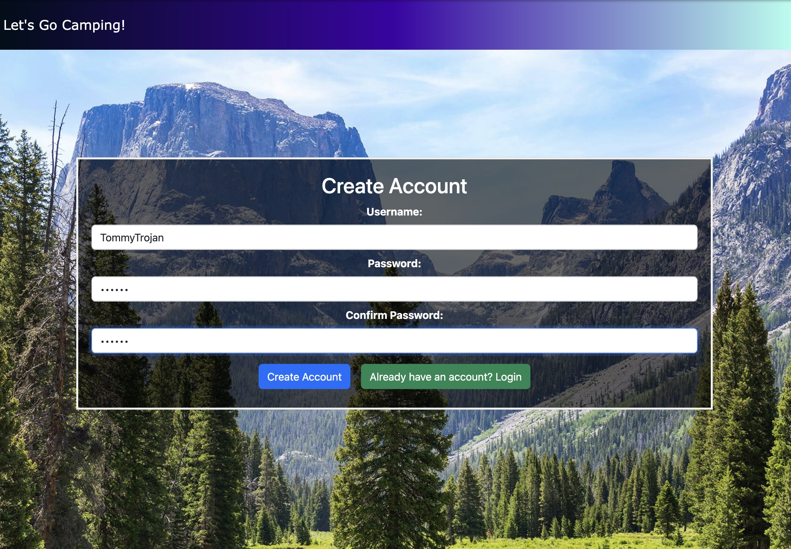

National Forest Application
As part of a group project for the 310 course, my team and I developed a client-server web application designed to help users plan camping trips to U.S. National Parks. The application integrates essential features, such as park searches, trip planning, and user collaboration, all while prioritizing accessibility, security, and a polished user experience. The project followed a Scrum-based workflow to ensure efficient and iterative development.
Request access for source code!
WHAT:
CSCI 310 (Software Engineering) Group Project
WHEN:
Spring 2024
Key Features
- Search & Explore: Users can search for parks based on various attributes and explore detailed park information.
- Favorites Management: Create, update, and review a personalized list of favorite parks.
- Collaboration: Compare favorites with friends and suggest group trips.
- Accessibility: Ensures usability for individuals with disabilities and compatibility with Chrome and mobile devices.
- Secure & Aesthetic: Implements data protection protocols and features an attractive, user-friendly interface.
Technology Stack
- Frontend: Built with React, leveraging reusable components organized under /site/src/pages and /site/src/components. Styling was implemented with modern libraries like Tailwind CSS and Bootstrap.
- Backend: Developed using SpringBoot, with the server-side architecture handling API endpoints and enabling seamless data flow. The backend resides under /src/main and integrates with the frontend for serving dynamic content.
Development Workflow
- Version Control: Maintained two primary branches: documentation for Scrum process documentation and main for feature development.
-
Testing & Quality Assurance:
- Java backend tests using JUnit with coverage analysis via JaCoCo.
- React frontend tests using Jest, with detailed coverage reports for quality tracking.
-
Local Development:
- Backend: SpringBoot API launched locally using Maven commands.
- Frontend: React app served in development mode with live reload enabled.
For sprint reviews and stakeholder evaluations, the application runs in a Docker container. This ensures consistency in dependencies and environment setup.
This project exemplifies our team's ability to collaborate effectively on a full-stack development initiative, applying best practices in agile development, responsive design, and secure coding. It reflects our commitment to delivering a robust and user-centric product.
Some snapshots of this web application:
Login/SignUp Page
Search Functionality: Users can search by name, state, activity, and by amenity
The application will return the top 10 matches of a search request with the option to load another 10 parks via a Load More button
Parks have additional information that the user can read and make their decision